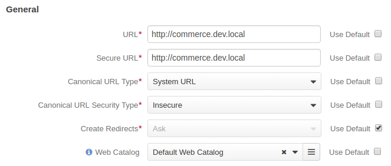

Global routing configuration includes the following information:
Note
The website level configuration has higher priority and overrides this configuration settings.
To change the default global routing settings:
Navigate to the system configuration (click System > Configuration in the main menu).
Select System Configuration > Websites > Routing in the menu to the left.
The Routing configuration page opens with the following options:
URL - Internal links and canonical URLs (meta keywords) on the OroCommerce Front Store pages may contain this value as the website base URL. This option value is used in internal links when a customer uses insecure (HTTP) connection. In the canonical links, it is used when the Canonical URL Security Type is set to Secure.
Secure URL - Internal links and canonical URLs (meta keywords) on the OroCommerce Front Store pages may contain this value as the website base URL. This option value is used in internal links when a customer uses secure (HTTPS) connection. In the canonical links, it is used when the Canonical URL Security Type is set to Insecure.
Canonical URL Type - this option defines whether the System URL or Direct URL should be used as a canonical link in the meta keywords in the page source code.
Note
Canonical link is used to help search engines identify the unique content that should be indexed.
When System URL is selected, the page URL is built using the system path to the item and its ID (e.g. /product/view/4).
When Direct URL is selected, the page URL is built using the page title (e.g. /500-watt-work-light).
Canonical URL Security Type - this option defines which value should be used as a website base URL in the canonical link in the page meta keywords. Supported options: Insecure and Secure.
When Insecure is selected, the website base URL in the canonical link matches the URL value.
When Secure is selected, the Secure URL value is used instead.
Create Redirects - this option defines a strategy for creating redirects when the URL building rules change. Supported options: Ask, Never, Always.
When Ask is selected, OroCommerce prompts to confirm redirect creation on every change.
When Never is selected, OroCommerce does not create any redirects.
When Always is selected, the redirects are created by default.
Web Catalog - when a Web Catalog is selected, it populates the main menu and sub-menus on the OroCommerce Front Store. If there is no Web Catalog in OroCommerce, the Master Catalog structure is mimicked.
To customize any of these options:
- Clear the Use Default box next to the option.
- Select the new option.
Click Save.